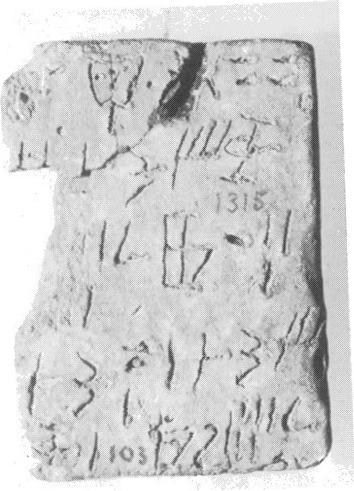
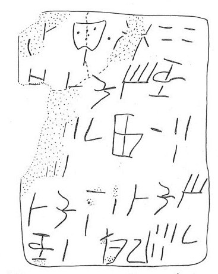

-
HT103
Names
HT103, HT 103
Support
Tablet
Location
Haghia Triada
Findspot
Casa Room 7


Scribe
HT Scribe 3
Context
Late Minoan IB
1500-1450 BCE
Dimensions
7.30
5.40
4.00
cm
GORILA OCR
Catalogue
HM 1315
Hiraklion Museum
Readings
1 1 0 U none
1 1 0 TA₂ none
1 1 1 *900 none
1 1 2 NI none
1 1 3 40 none
2 2 4 PA₃ none
2 3 5 DA none
2 3 5 KU none
2 3 5 SE none
2 3 5 NE none
3 3 6 6 none
3 3 7 ¹⁄₂ none
3 4 8 *188 none
3 4 9 10 none
3 4 9 3 none
4 5 10 DA none
4 5 10 KU none
4 5 10 NA none
4 5 11 1 none
4 6 12 DA none
4 6 12 KU none
4 6 12 SE none
5 6 12 NE none
5 6 13 1 none
5 7 14 KI none
5 7 14 RA none
5 7 15 5 none
5 7 16 ¹⁄₂ none
𐘉𐘷𐄁𐘝𐄓
𐘰𐘀𐙂𐘈𐘗
𐄌𐝆𐙓𐄐𐄉
𐘀𐙂𐘅𐄇𐘀𐙂𐘈
𐘗𐄇𐘸𐘴𐄋𐝆
UTA₂*900NI40
PA₃DAKUSENE
6¹⁄₂*188103
DAKUNA1DAKUSE
NE1KIRA5¹⁄₂
𐘉𐘷𐄁𐘝𐄓
𐘰
𐘀𐙂𐘈𐘗𐄌𐝆
𐙓𐄐𐄉
𐘀𐙂𐘅𐄇
𐘀𐙂𐘈𐘗𐄇
𐘸𐘴𐄋𐝆
UTA₂*900NI40
PA₃
DAKUSENE6¹⁄₂
*188103
DAKUNA1
DAKUSENE1
KIRA5¹⁄₂
HT 103
, page tablet (HM 1315) (GORILA I: 170-171)
Schoep 2002, type III (single commodity)
HT Scribe
3
|
side.line
|
statement
|
logogram
|
number
|
fraction
|
|
.1
|
U
-TA
2
•
|
FIC
|
40
|
|
|
.2
|
|
PA
3
|
|
|
|
.2
|
DA-KU-SE-NE[
|
|
]
6
|
J
|
|
.3
|
|
*188
|
13
|
|
|
.4
|
DA-KU-NA
|
|
1
|
|
|
.4-5
|
DA-KU-SE-NE
|
|
1
|
|
|
.5
|
KI-RA
|
|
5
|
J
|
2: for PA
3
as a logogram without a number, see HT
9b.1.
4: That DA-KU-NA would not be related to DA-KU-SE-NE seems
unlikely, but JGY has no explanation for how the numbers might work.
5: a space between NE
1
and KI-RA, lending support to the following supposition by Schoep that
KI-RA is a transaction term.
5: Schoep (1994-95, 71, n. 60), taking a lead from GORILA (which
suggests separating PA3 from DA-KU-SE-NE), implies the following:
PA
3
DA-KU-SE-NE[
6
J
DA-KU-NA
1
KI-RA ("balance")
5
J
PA
3
DA-KU-SE-NE[
6
J
DA-KU-NA
1
KI-RA ("balance")
5
J
Using Davis's interpretation of HT 8, we would then expect
PA
3
DA-KU-SE-NE to anticipate an omission of 6J, but
an addition of 1 on line .4-5 results in a new balace/omission of
5J.
Commentary © John Younger
References
papers/GORILA-Vol1.pdf#page=206